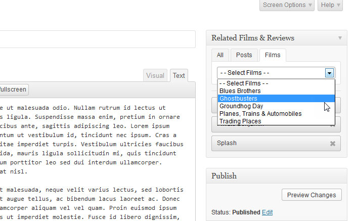
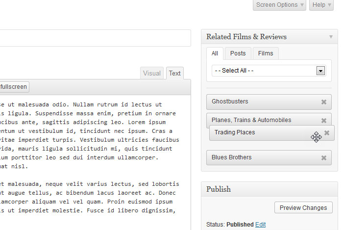
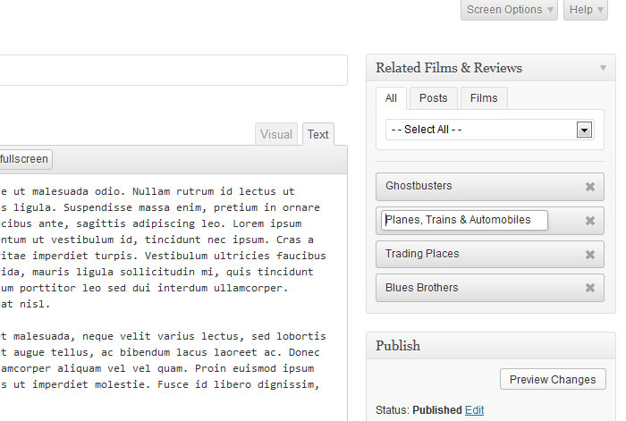
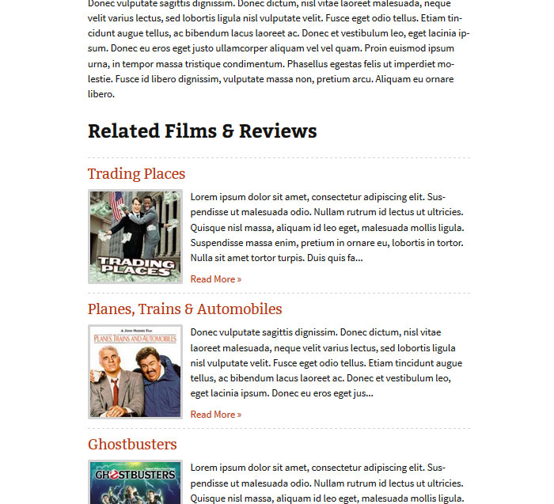

Plugin Features
Wordpress
Utilities
Wordpress 3.4+
IE8+
Mockingbird is a flexible, customisable post type relator plugin for Wordpress, allowing you to create and retrieve lists of related post type items. Features include the ability too:
- Add and remove related posts.
- Filter posts by available post type (AJAX powered).
- Rename related posts for individual lists.
- Reorder posts by dragging and dropping.
- Automatically display related lists on each posts.
- Embed related lists into post content using shortcodes.
Configuration options include the ability too:
- Specify what post types to include.
- Specify what post types to be displayed on.
- Specify what individual posts to be displayed on.
- Set a custom list title.
- Specify how the outputted list is styled.
A documented API is also provided for further theme integration and development, including the ability too:
- Get related post id array for the current post, page or custom post type.
- Get related post id array by the id of a post, page or custom post type.
- Get related post data array for post, page or custom post type.
- Output related list for the current post, page or custom post type.
- Output related list by the id of a post, page or custom post type.
- Style outputted list with a custom style array.
- Set up multiple Mockingbird instances with individual configurations.
User Overview
Select Related Content
Use the drop down filter to select related content.

Order/Re-order Related Content
Change the list order by dragging and dropping the items.

Re-label Related Items
Click on the item title to re-label the link text.

Display Related List
Display or integrate the related list into your Wordpress theme.
